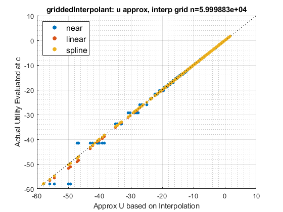
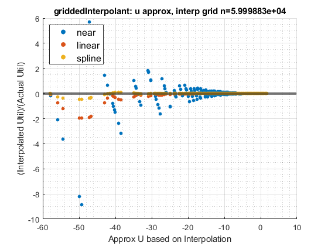
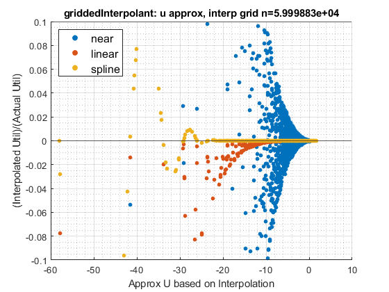
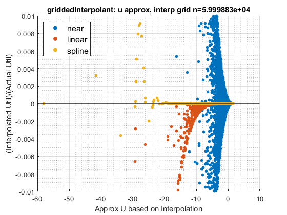
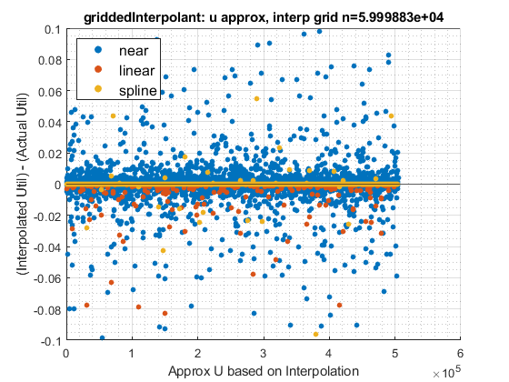
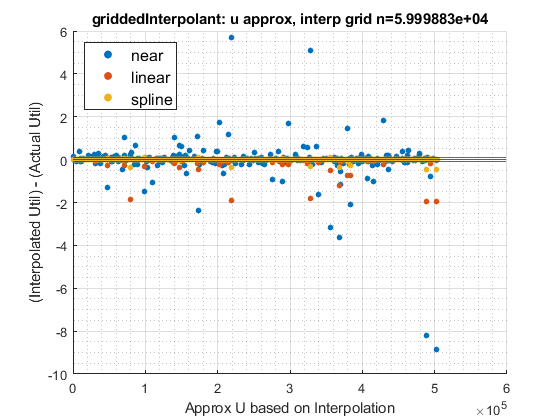

Contents
function ff_rational_exp_interp(varargin)
Parameters
params_len = length(varargin); if params_len > 2 error('ff_defaultmap:Can only have 2 container map parameters'); end % Defaults param_map = containers.Map('KeyType','char', 'ValueType','any'); param_map('fl_crra') = 1.5; param_map('c_min') = 0.001; param_map('c_min_for_util') = 0.001; param_map('c_gap') = 10^-3; param_map('c_max') = 60; param_map('it_rown') = 100; param_map('st_single_double') = 'double'; support_map = containers.Map('KeyType','char', 'ValueType','any'); support_map('bl_display') = true; support_map('bl_graph') = true; support_map('bl_graph_onebyones') = true; support_map('bl_time') = true; support_map('bl_profile') = false; support_map('st_profile_path') = [pwd '/profile']; default_maps = {param_map, support_map}; % Parse Parameters % see: C:\Users\fan\M4Econ\support\dtype\map_override.m [default_maps{1:params_len}] = varargin{:}; param_map = [param_map; default_maps{1}]; support_map = [support_map; default_maps{2}]; params_group = values(param_map, {'fl_crra', 'c_min', 'c_min_for_util', 'c_gap', 'c_max'}); [fl_crra, c_min, c_min_for_util, c_gap, c_max] = params_group{:}; params_group = values(param_map, {'it_rown'}); [it_rown] = params_group{:}; params_group = values(param_map, {'st_single_double'}); [st_single_double] = params_group{:}; % support params_group = values(support_map, {'bl_display', 'bl_graph', 'bl_graph_onebyones'}); [bl_display, bl_graph, bl_graph_onebyones] = params_group{:}; params_group = values(support_map, {'bl_time', 'bl_profile', 'st_profile_path'}); [bl_time, bl_profile, st_profile_path] = params_group{:}; % Profile On if (bl_profile) close all; profile off; profile on; end if (bl_time); tic; end
Function Codes
Test Consumption Matrix
it_coln = round(((it_rown-1)*it_rown)/2 + it_rown); mt_c = rand([it_rown, it_coln])*(c_max - c_min) + c_min; if (strcmp(st_single_double, 'single')) mt_c = single(mt_c); end % Define CRRA Utility Function with Minimum Consumption fu_c = @(c) (((c).^(1-fl_crra)-1)./(1-fl_crra)); fu_c_cmin = @(mt_c) (fu_c(mt_c).*(mt_c > c_min_for_util) + ... fu_c(c_min_for_util).*(mt_c <= c_min_for_util)) ; % Exact Utility Evaluation at Full Grid mt_fl_u_at_fullc = fu_c_cmin(mt_c); % Interpolation Grid fl_mt_c_min = min(mt_c, [], 'all'); fl_mt_c_max = max(mt_c, [], 'all'); it_interp_c_grid_n = (fl_mt_c_max-fl_mt_c_min)/c_gap; ar_fl_c_grid = linspace(fl_mt_c_min, fl_mt_c_max, it_interp_c_grid_n); if (strcmp(st_single_double, 'single')) ar_fl_c_grid = single(ar_fl_c_grid); end ar_fl_u_at_c_grid = fu_c_cmin(ar_fl_c_grid); % Interpolation f_grid_interpolant_near = griddedInterpolant(ar_fl_c_grid, ar_fl_u_at_c_grid(:), 'nearest'); f_grid_interpolant_linr = griddedInterpolant(ar_fl_c_grid, ar_fl_u_at_c_grid(:), 'linear'); f_grid_interpolant_spln = griddedInterpolant(ar_fl_c_grid, ar_fl_u_at_c_grid(:), 'spline'); if (bl_display) disp(f_grid_interpolant_near); disp(f_grid_interpolant_linr); disp(f_grid_interpolant_spln); end ar_interp_gridded_near = f_grid_interpolant_near(mt_c); ar_interp_gridded_linr = f_grid_interpolant_linr(mt_c); ar_interp_gridded_spln = f_grid_interpolant_spln(mt_c); % Graphing Comparison if (bl_graph) if (bl_graph_onebyones) else figure('PaperPosition', [0 0 17 12]); end for sub_j=1:1:6 if (bl_graph_onebyones) figure('PaperPosition', [0 0 6 8]); else subplot(2,3,sub_j) end hold on; if (sub_j == 1) ar_divide_by = 0; else ar_divide_by = mt_fl_u_at_fullc(:); end if (sub_j <= 4) ar_x_vec = mt_fl_u_at_fullc(:); else ar_x_vec = 1:1:length(mt_fl_u_at_fullc(:)); end g1 = scatter(ar_x_vec, ar_interp_gridded_near(:)-ar_divide_by, 20, 'filled'); g2 = scatter(ar_x_vec, ar_interp_gridded_linr(:)-ar_divide_by, 20, 'filled'); g3 = scatter(ar_x_vec, ar_interp_gridded_spln(:)-ar_divide_by, 20, 'filled'); legend([g1, g2, g3], {'near','linear','spline'}, 'Location','northwest',... 'NumColumns',1,'FontSize',12,'TextColor','black'); if (sub_j == 1) hline = refline([1 0]); hline.Color = 'k'; hline.LineStyle = ':'; hline.HandleVisibility = 'off'; ylabel('Actual Utility Evaluated at c') else yline0 = yline(0); yline0.HandleVisibility = 'off'; yline1 = yline(0.1); yline1.HandleVisibility = 'off'; yline2 = yline(-0.1); yline2.HandleVisibility = 'off'; if (sub_j == 2 || sub_j == 3 || sub_j == 4) ylabel('(Interpolated Util)/(Actual Util)') end if (sub_j == 5 || sub_j == 6) ylabel('(Interpolated Util) - (Actual Util)') end if (sub_j == 3) ylim([-0.1, 0.1]) end if (sub_j == 4) ylim([-0.01, 0.01]) end if (sub_j == 5) ylim([-0.1, 0.1]) end if (sub_j == 6) end end grid on; grid minor; title(sprintf('griddedInterpolant: u approx, interp grid n=%d', it_interp_c_grid_n)) xlabel('Approx U based on Interpolation') end end
griddedInterpolant with properties:
GridVectors: {[1×59998 double]}
Values: [59998×1 double]
Method: 'nearest'
ExtrapolationMethod: 'nearest'
griddedInterpolant with properties:
GridVectors: {[1×59998 double]}
Values: [59998×1 double]
Method: 'linear'
ExtrapolationMethod: 'linear'
griddedInterpolant with properties:
GridVectors: {[1×59998 double]}
Values: [59998×1 double]
Method: 'spline'
ExtrapolationMethod: 'spline'
      Profiling
if (bl_profile) profile off profile viewer profsave(profile('info'), st_profile_path); end if (bl_time); toc; end
Elapsed time is 8.246185 seconds.
end